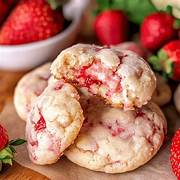

The 3-Ingredient Strawberry Cookies

Ingredients
- 1 box strawberry cake mix
- 1 cup whipped topping (like Cool Whip)
- Powdered sugar (for coating)
Steps
- Preheat oven to 180°C (350°F)
- Line a baking tray with parchment paper.
- Take a bowl and add the strawberry cake mix.
- Add whipped topping into the bowl.
- Mix well until it forms a soft dough.
- Scoop small portions of dough (about 1 tbsp each).
- Roll into balls using your hands.
- Coat each ball in powdered sugar.
- Place on tray and slightly flatten them.
- Bake for 10-12 minutes, then cool before eating.